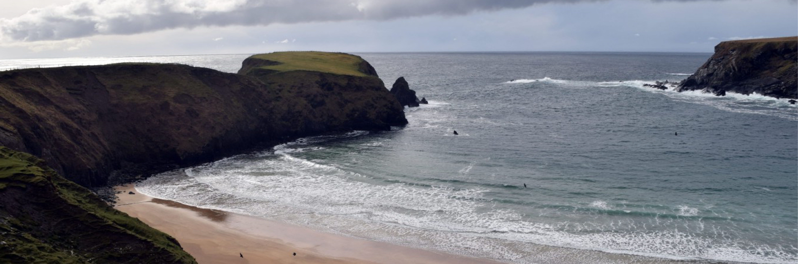

Motive
The purpose of handmade is to showcase the craft production of three diverse crafts and illustrate their importance in a modern Ireland.

Donegal
County Donegal is one of the most prevalent producers of crafts in Ireland. In recent years, the nation has seen an increase in traditional crafts. This growth has been promoted by rural areas of Donegal, such as Donegal Town, Glencolmcille and Kilcar. Donegal’s tourism industry is thriving as a result of their strong history of craft and willingness to continue it.
Kilcar
Glencolmcille
Donegal Town
Handmade Donegal
Production Crew
Deirdre McGrath
Hayley Marjoram
Cillian Connolly
Stephanie Brady
Robyn Ree